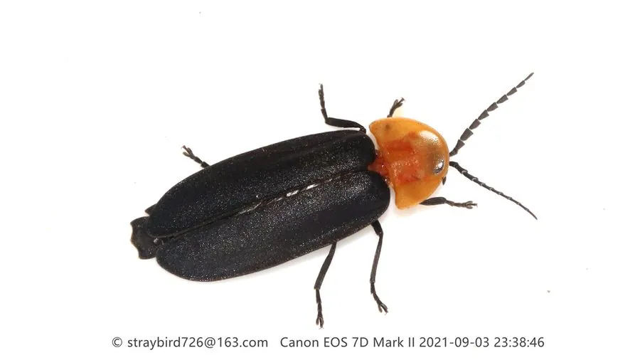

昆虫 · 动物界
窗萤 Pyrocoelia pectoralis

前胸背板有一对透明窗斑的萤火虫，雄虫发光器发达、雌虫短翅不能飞，常见于中国南方的林缘和草丛。
- 分类
- 门节肢动物门纲昆虫纲目鞘翅目科萤科属窗萤属
- 栖息环境
- 林缘、草丛和湿润山谷，幼虫生活在落叶层和表土中
- 地理分布
- 中国南方，以及日本的部分地区
- 保护级别
- 暂无评估
物种志
窗萤成虫体长 12–18 mm，体色橙黄至淡黄，前胸背板上有两个透明的窗斑，因此得名；鞘翅较软，雄虫有发达的发光器，发出绿黄色的光。雌虫的鞘翅退化、不能飞行，外形与幼虫相似。
窗萤分布于中国南方以及日本的部分地区，生活在林缘、草丛和湿润的山谷中。它的幼虫生活在落叶层和表土中，捕食蜗牛、蛞蝓等软体动物，捕食时用特化的上颚注入麻醉液。成虫多在夏季夜间活动，雄虫边飞边发光求偶，雌虫则停在草叶上回应。窗萤的成虫寿命较短，一般只活一两周，主要任务是繁殖。近年来受光污染、农药使用和栖息地破碎化的影响，窗萤的种群数量和分布范围都在缩小，已成为萤火虫保护中受关注的种类。
形态与习性
- 食性幼虫捕食蜗牛、蛞蝓等软体动物
- 体长12–18 mm
- 窗斑前胸背板有一对透明的窗状斑
- 雌雄差异雌虫鞘翅退化不能飞，外形似幼虫
- 发光雄虫发出绿黄色光，夜间飞舞求偶
- 威胁光污染、农药和栖息地破碎化
趣味知识
- 窗萤的雌虫不能飞行，只能停在草叶上等待雄虫飞来。
- 它的幼虫吃蜗牛，会用上颚给猎物注入麻醉液。
- 成虫寿命只有一两周，几乎把全部时间用在繁殖上。